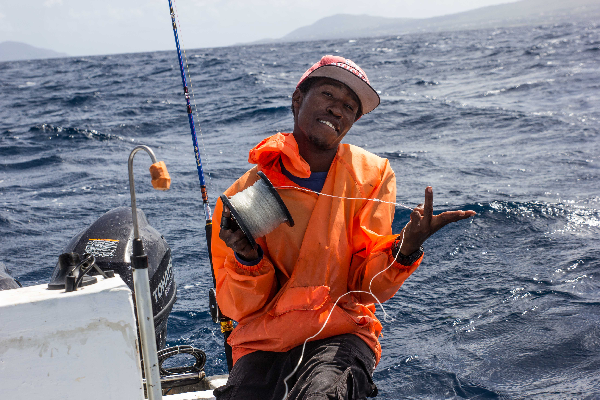

 Last year I went on a deep sea fishing trip with some friends. We left port at 5 AM and made it to the fishing grounds an hour later. On our way to the grounds we lost one motor. Despite losing one engine we continued fishing. By 9am we had ventured out 8 miles from sure in about 1200 ft of water. We fished till around 12 noon and then we retreated to the shallows as the waves kept getting larger; bear in mind we were in a small 12 foot boat.
Home